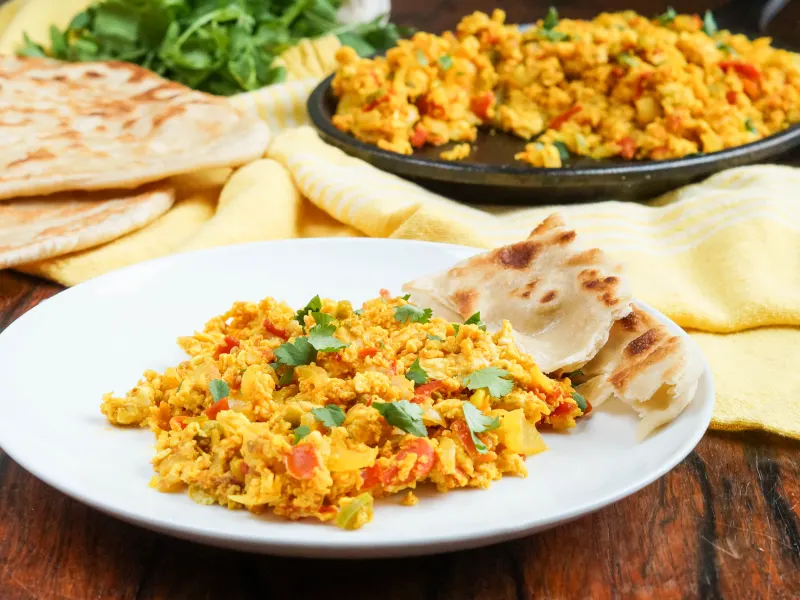

Shakshouka

Prepared Shakshouka Dish
Shakshuka (chakchouka or shakshouka) is a
middle eastern dish of tomatoes, onions, pepper, spices, and eggs.
It's usually eaten for breakfast or lunch.
Ingredients
- Eggs
- Olive oil
- Onion
- Garlic
- Bell Peppers
- Paprika
- Salt
- Cumin
- Chili pepper
- Tomatoes
Steps
- Heat Olive oil in pan to use, and stir in eggs to make them scrambled
- Add in onion, bell pepper, garlic and stir until they become soft
- Mix in a seperate bowl tomatoes, chili peppers, cumin, paprika, and salt.
- Stir in mixture in seperate bowl into the pan with the eggs.
- Contiune to stir until mixture is throughouly mixed and desired consistency for scrambled eggs is reached.
- Serve Hot and enjoy!